기계정비산업기사 (2016-08-21 기출문제)
1과목: 공유압 및 자동화시스템
1. 양 끝의 지름이 다른 관이 수평으로 놓여 있다.왼쪽에서 오른쪽으로 물이 정상류를 이루고 매초 2.8L의 물이 흐른다.B부분의 단면적이 20cm2 이라면 B부분에서 물의 속도는?
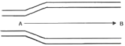
- 14cm/s
- 56cm/s
- 140cm/s
- 560cm/s
(정답률: 76%)

2. 어큐물레이터(accumulator)의 일반적 기능이 아닌 것은?
- 맥동 제거
- 압력 감소
- 충격 완충
- 에너지 축적
(정답률: 60%)
3. 오일의 정도를 알맞게 유지하기 위하여 오일의 온도를 제어하는 것은?
- 필터
- 가열기
- 윤활기
- 축압기
(정답률: 83%)
4. 다음 공압기호의 명칭은?
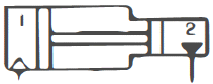
- 증압기
- 복동 실린더
- 차동 실린더
- 다이어프램형 실린더
(정답률: 68%)
5. 다음 중 2개의 공압 복동 실린더가 1개의 실린더 형태로 조립되어 실린더의 출력이 거의 2배의 큰 힘을 얻을 수 있는 것은?
- 충격 실린더
- 탠덤실린더
- 양로드형 실린더
- 다위치 제어 실린더
(정답률: 86%)
6. 날개의 회전운동에 따라 공기의 흐름이 회전축과 평행으로 흐르는 압축기는?
- 사류식 압축기
- 원심식 압축기
- 축류식 압축기
- 혼류식 압축기
(정답률: 71%)
7. 제어밸브의 구조에 의한 분류에 해당되지 않는 것은?
- 스풀 형식
- 포핏 형식
- 로터리 형식
- 파이럿 형식
(정답률: 66%)
8. 카운터밸런스 밸브 및 시퀀스 밸브에 관한 설명으로 옳은 것은?
- 원격제어가 가능한 시퀀스 밸브는 내부 파일럿형이다.
- 카운터밸런스 밸브는 압력릴리프 밸브와 체크밸브의 조합이다.
- 카운터밸런스 밸브는 무부하, 시퀀스 밸브는 배압발생밸브이다.
- 카운터밸런스 밸브는 압력제어밸브, 시퀀스밸브는 방항제어밸브이다.
(정답률: 77%)
9. 관로 면적을 감소시킨 통로로서 길이가 단면 치수에 비하여 짧은 것은?
- 스풀(spool)
- 초크(choke)
- 플린저(plunger)
- 오리피스(orifice)
(정답률: 74%)
10. 다음 중 증압기의 사용 용도로 가장 적합한 것은?
- 압력 에너지를 저장할 때
- 빠른 선형 속도를 얻고 싶을 때
- 빠른 회전 속도를 얻고 싶을 때
- 압력을 증대시켜 큰 힘을 얻고 싶을 때
(정답률: 89%)
11. 공압 시스템의 고장을 빨리 발견하고 조치를 취하기 위한 방법으로 가장 거리가 먼 것은?
- 회로도를 알기 쉬운 형태로 작성한다.
- 배관을 길게 하여 가능한 많은 수분을 응축시킨다.
- 사용 부품들은 쉽게 교체 가능한 범용제품을 사용한다.
- 배관은 제어 캐비넷 배치도와 회로도가 일치하도록 한다.
(정답률: 90%)
12. 핸들링(handling) 장치의 기능으로 볼 수 없는 것은?
- 계수(counting)
- 삽입(inserting)
- 이송(feeding)
- 파지(gripping)
(정답률: 60%)
13. 공압 타이머에서 제어 신호가 존재함에도 출력신호가 발생하지 않을 때, 다음 중 가장 먼저 점검해야 할 사항은?
- 탱크가 오염되었는지 확인한다.
- 서비스 유닛이 잠겨있는지 확인한다.
- 윤활유에 수분이 섞였는지 확인한다.
- 유량조절용 밸브의 조절 나사를 완전히 열고 공기의 새는 소리를 확인한다.
(정답률: 71%)
14. 로드리스 실린더에 관한 설명으로 틀린 것은?
- 설치공간을 줄일 수 있다.
- 빠른 속도를 얻을 수 있다.
- 임의의 위치에서 정지시키기가 유리하다.
- 양방항의 운동에서 균일한 힘과 속도를 얻기가 유리하다.
(정답률: 47%)
15. 다음 그림과 같이 S1과 S2를 동시에 누른 경우 램프에 불이 들어오는 논리회로는?
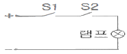
- OR
- AND
- NOR
- NOT
(정답률: 87%)
16. 60Hz. 4극 유도전동기의 회전자 속도가 1710rpm일 때 슬립은?
- 5%
- 8%
- 10%
- 15%
(정답률: 53%)
17. 신호의 처리 중 최근 DSP(Digital Signal Processing) 기술의 발달로 음향기기, 통신, 제어계측 등의 분야에 응용되는 신호형태는?
- 계수 신호(counting signal)
- 연속 신호(continuous signal)
- 아날로그 신호(analog signal)
- 이산시간 신호(discrete-time signal)
(정답률: 63%)
18. 다음 중 자동화 시스템 구축 시 생기는 단점과 가장 거리가 먼 것은?
- 제어장치 증가
- 시설 투자비 증대
- 자재비, 인건비 과다
- 보수유지에 높은 기술수준 요구
(정답률: 82%)
19. 신호 발생 요소의 신호영역을 ON-OFF 표시 방식으로 표현함으로써 각 입력 신호 발생간의 신호간섭현상을 예지할 수 있는 동작 상태 표현법은?
- 논리선도
- 제어선도
- 플로차트
- 변위단계선도
(정답률: 67%)
20. 다음 중 유압모터의 효율을 감소시키는 사항으로 가장 거리가 먼 것은?
- 유체의 유량 변화
- 유체 접촉부와 유체의 마찰
- 유체의 난류성에 의한 마찰
- 흡입구와 토출구 사이의 내부 누설
(정답률: 65%)
2과목: 설비진단관리 및 기계정비
21. 음압을 표시할 때 109 눈금을 주로 사용하는데 이러한 109 눈금상의 크기를 비교하여 표시한 음압도(SPL) 산출공식은? (단, P : power. P0 : 기준 power 이 다.)
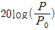
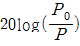
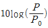
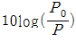
(정답률: 59%)
22. 석면과 암면 등 섬유성 재료의 흡음력을 이용해서 소음을 감소시키는 장치는?
- 반사 소음기
- 충격식 소음기
- 흡음식 소음기
- 흡진식 소음기
(정답률: 87%)
23. TPM의 특징은 “고장 제로, 불량 제로”이다. 이를 위해서는 예방이 가장 좋은 방법인데 이 예방의 개념과 거리가 먼 것은?
- 조기 대처
- 이상 조기 발견
- 고장 및 정지의 방치
- 정상적인 상태 유지
(정답률: 84%)
24. 강철 시스템의 고유진동수와 차단기의 정적변위와의 관계로 옳은 것은?
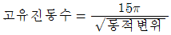
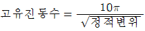
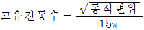
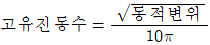
(정답률: 68%)
25. 방청유의 종류가 아닌 것은?
- 용제 희석형
- 지문 제거형
- 기화성 방청제
- 열처리 방청제
(정답률: 51%)
26. 설비의 배치 시 동일 기종의 설비를 모아서 배열하는 설비배치 형태는?
- 기능형 배치
- 제품형 배치
- 혼합형 배치
- 제품 고정형 배치
(정답률: 63%)
27. 설비 표준의 종류에 관한 내용으로 옳은 것은?
- 설비설계규격 : 설비 샤양서, 설비 열화 측정, 열화 회복을 위한 조건의 표준
- 설비자재 구매규격 : 설비설계표준, 설비성능표준에 따라 규정되는 것으로의 표준
- 시운전 검수표준 : 표준에 일치되는지의 시험방법, 검사방법에 대한 표준
- 보전작업표준 : 설비 열화 측정(점검 검사), 열화 진행방지(일상보전) 및 열화회복(수리)을 위한 조건의 표준
(정답률: 46%)
28. 회전체의 무게 중심이 축 중심과 일치하지 않아 회전주파수 성분이 높게 나타났을 때 발생하는 현상은?
- 풀림
- 압력 맥동
- 언밸런스(unbalance)
- 미스얼라인먼트(misalignment)
(정답률: 74%)
29. 보수자재 예비부품 관리에서 재고율 분석사항으로 틀린 것은?
- 상비품 재고량의 적합성
- 상비품 항목의 타당성
- 예비품의 사용고 발주방식 표준화
- 보관 창고 배치나 공간 효율 등의 적합성
(정답률: 55%)
30. 음원으로부터 단위 시간당 방출되는 총 음에너지를 무엇이라 하는가?
- 음향 출력
- 음향 세기
- 음향 입력
- 음의 회절
(정답률: 76%)
31. 설비의 보전효과를 측정하는 방법은 여러 가지가 있다. 다음 중 보전효과 측정방법 중 틀린 것은?
- 평균고장간격 = 1/고장률
- 고장 도수율 = 고장횟수/부하시간×100
- 고장빈도(회수)율 = 보전비 총액/생산량×100
- 설비가동률 = (정미 가동시간/부하시간)×100
(정답률: 63%)
32. 진동 측정시 주의해야 할 사항으로 틀린 것은?
- 항상 동일한 장소를 측정한다.
- 진동계를 바꿔가면서 측정한다
- 항상 동일한 방향으로 측정한다.
- 언제나 같은 센서의 측정기를 사용한다.
(정답률: 84%)
33. 품질보전의 전개에 있어서 요인해석의 방법에 해당하지 않는 것은?
- PM 분석
- 특성 요인도
- 경제성 분석
- FMECA 분석
(정답률: 66%)
34. 다음 그림은 설비관리 조직 중에서 어떤 형태의 조직인가?
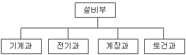
- 공정별 조직
- 기능별 조직
- 제품별 조직
- 전문 기술별 조직
(정답률: 76%)
35. 설비의 효율화를 저해하는 가장 큰 로스(Loss)는?
- 고장로스
- 조정로스
- 일시정체로스
- 초기 수율로스
(정답률: 84%)
36. 공장의 특정 지역에 보전 요원이 배치되어 그 지역의 예방 보전. 검사, 급유, 수리 등을 담당하는 보전 방식은?
- 부분 보전
- 지역 보전
- 절충 보전
- 집중 보전
(정답률: 83%)
37. 대부분의 설비는 어느 기간 동안 수명을 유지한다. 그러다 어느 기간이 지나면 설비가 고장 나기 시작한다. 다음 중 초기고장기와 우발고장기가 지난 후, 마모 고장기에 발생하는 고장 원인과 가장 거리가 먼 것은?
- 불충분한 오버홀
- 부품들 간의 변형
- 열화에 의한 고장
- 부적절한 설비의 설치
(정답률: 78%)
38. 순환급유를 할 수 없는 곳에 사용하는 윤활유 급유법은?
- 체인 급유법
- 칼라 급유법
- 패드 급유법
- 사이펀 급유법
(정답률: 69%)
39. 다음 중 전치 증폭기의 기능은?
- 신호 증폭과 임피던스 결합
- 저항 증폭과 임피던스 결합
- 전류 증폭과 리액턴스 결합
- 전압 증폭과 리액턴스 결합
(정답률: 66%)
40. 진동 측정용 센서 중 비접촉형으로 변위검출용에 사용되는 센서가 아닌 것은?
- 용량형 센서
- 동전형 센서
- 와전류형 센서
- 전자광학형 센서
(정답률: 61%)
3과목: 공업계측 및 전기전자제어
41. 베이스 접지 시 전류 증폭률이 0.99인 트랜지스터를 이미터 접지 회로에 사용할 때 전류 증폭률은?
- 97
- 98
- 99
- 100
(정답률: 72%)
42. SCR의 올바른 전원공급 방법인 것은?
- 애노드 (-)전압, 캐소드 (+)전압, 게이트 (-)전압
- 애노드 (-)전압, 캐소드 (+)전압, 게이트 (+)전압
- 애노드 (+)전압, 캐소드 (-)전압, 게이트 (-)전압
- 애노드 (+)전압, 캐소드 (-)전압, 게이트 (+)전압
(정답률: 65%)
43. 피드백 프로세스제어에서 검출부에서 검지하여 조절계에 가하는 검출량을 나타내는 것은?
- 변량(PV)
- 설정값(SV)
- 조작신호(MV)
- 제어편차(DV)
(정답률: 51%)
44. 저항의 직렬접속 회로에 대한 설명 중 틀린 것은?
- 직렬회로의 전체 저항 값은 각 저항의 총합계와 같다.
- 직렬회로 내에서 각 저항에는 같은 크기의 전류가 흐른다.
- 직렬회로 내에서 각 저항에 걸리는 전압강하의 합은 전원 전압과 같다
- 직렬회로 내에서 각 저항에 걸리는 전압의 크기는 각 저항의 크기와 무관하다.
(정답률: 75%)
45. 다음 그림의 휘트스톤 브리지(Wheatston bridge) 회로에서 검류계의 지침이 0을 지시할 때 미지저항 Rx의 값(Q)은?
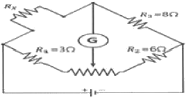
- 1
- 2
- 3
- 4
(정답률: 71%)
46. 자동제어의 분류 중 폐루프 제어에 해당되는 내용으로 적합한 것은?
- 시퀀스제어 시스템이다.
- 피드백(feed back)신호가 요구된다.
- 출력이 제어에 영향을 주지 않는다.
- 외란에 대한 영향을 고려할 필요가 없다.
(정답률: 73%)
47. 미리 정해진 순서에 따라 제어의 각 단계를 차례로 진행시켜 가는 제어는?
- 정치 제어
- 추치 제어
- 시퀀스 제어
- 피드백 제어
(정답률: 86%)
48. 다음 논리회로의 논리식은?
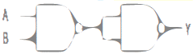
- Y = A + B
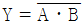
- Y = AㆍB
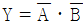
(정답률: 55%)
49. 논리식 Aㆍ(A+B)를 간단히 하면?
- A
- B
- AㆍB
- A+B
(정답률: 58%)
50. 다음의 진리표를 만족하는 논리 게이트는? (단, A와 B는 입력단이고, S는 출력단이다.)
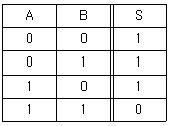
- NOR
- XOR
- NAND
- XNOR
(정답률: 70%)
51. 3상 유도전동기의 정-억 운전회로에서 정ㆍ역 동시 투입에 의한 단락사고를 방지하기 위하여 사용하는 회로는?
- 역상회로
- 인터록회로
- 자기유지회로
- 시한동작회로
(정답률: 78%)
52. 다음 회로의 명칭은 무엇인가?
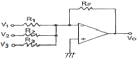
- 비교기
- 감산기
- 가산기
- 전압전류변환기
(정답률: 57%)
53. 다음 내용 설명 중 틀린 것은?
- 오버슈트는 응답 중에 생기는 입력과 출력사이의 편차량을 말한다.
- 지연시간(delay time)이란 응답이 최초로 희망값의 30%진행되는데 요하는 시간이다.
- 상승시간(rise time)이란 응답이 희망값의 10%에서 90%까지 도달하는데 요하는 시간이다.
- 정정시간(settling time)은 응답의 최종값의 허용범위가 5~10%내에 안정되기까지 요하는 시간이다.
(정답률: 65%)
54. 온도를 저항으로 변환시키는 것은?
- 열전대
- 전자코일
- 인덕턴스
- 서미스터
(정답률: 71%)
55. 계전기(relay)접점의 불꽃을 소거할 목적으로 사용하는 반도체 소자는?
- 바리스터
- 서미스터
- 터널 다이오드
- 바랙터 다이오드
(정답률: 71%)
56. 입력 신호가 주어지고 일정시간 경과 후에 내장된 접점을 ON, OFF 시키는 시퀀스 제어용 기기는 ?
- 스위치
- 타이머
- 릴레이
- 전자 개폐기
(정답률: 69%)
57. 평균 반지름이 10cm 이고 감은 회수가 20회인 원형코일에 2A의 전류를 흐르게 하면 이 코일중심의 자장의 세기는 몇 AT/m인가?
- 100
- 200
- 300
- 400
(정답률: 52%)
58. 히스테리시스(hysteresis)차에 의한 오차에 해당되는 것은?
- 이론 오차
- 관측 오차
- 계측기 오차
- 환경적 오차
(정답률: 58%)
59. 단락보호와 과부하보호에 사용되는 기기는?
- 전자개폐기
- 한시계전기
- 전자릴레이
- 배선용차단기
(정답률: 54%)
60. PLC에 사용되는 부품 중 출력 기기와 관계가 없는 것은?
- 벨
- 리밋 스위치
- 전자 개폐기
- 솔레노이드 밸브
(정답률: 60%)
4과목: 기계정비 일반
61. 방청제의 종류 중 방청능력이 크고, 두터운 피막을 형성하며, 1종(KP-4), 2종(KP-5), 3종(KP-6)으로 분류되는 것은
- 윤활 방청유
- 바셀린 방청유
- 용제 희석형 방청유
- 지문 제거형 방청유
(정답률: 73%)
62. 플랜지형 커플링의 센터링 작업을 할 때에 사용되는 다이얼 게이지의 사용상 주의사항으로 잘못된 것은?
- 커플링이 가열되어 있어도 즉시 측정한다.
- 사용 중에는 다이얼 게이지 스핀들(spindle)에 기름을 주지 않는다.
- 다이얼 게이지 눈금을 읽는 시선은 측정 면과 직각방향이어야 한다.
- 다이얼 게이지 스핀들의 선단을 손가락 끝으로 가볍게 밀어올리고 가만히 내린다.
(정답률: 81%)
63. 기어 내경이 D 이고 죔새가 △d일 때, 가열온도(T)를 구하는 식은? (단, 기어의 열팽창계수는 α이다.)
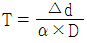
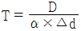
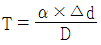
- T = α × △d × D
(정답률: 74%)
64. 기어의 파손 원인 중 윤활 문제로 발생하는 것은?
- 피칭
- 스폴링
- 피로파괴
- 스코어링
(정답률: 69%)
65. 상온에서 유동적인 접착성 물질로서 바른 후 일정시간 경과하면 건조되어 누설을 방지하는 것은?
- 고무 개스킷
- 석면 개스킷
- 액상 개스킷
- 릴랜드 개스킷
(정답률: 83%)
66. 기어의 모듈이 M, 잇수를 Z라고 할 때 피치원 지름 D[mm]를 구하는 공식은?
- D = Z/M
- D = MㆍZ
- D = Z/πM
- D = πZ/M
(정답률: 71%)
67. 전동기의 고장 원인 중 기동 불능에 대한 원인으로 옳지 않은 것은?
- 단선
- 퓨지 용단
- 서머 릴레이 작동
- 전원 전압의 변동
(정답률: 70%)
68. 펌프의 동력이 급차단, 급기동 시에 관내부의 압력이 상승 또는 하강하는 현상은?
- 서징(surging)
- 부식(corrosion)
- 캐비테이션(cavitation)
- 수격현상(water hammer)
(정답률: 72%)
69. 정비용 측정기구 중 베어링의 윤활상태를 측정하는 기구는?
- 록 타이트
- 그리스 컵
- 베어링 체커
- 스트로브스코프
(정답률: 84%)
70. 기계분해 작업 시 이상 상황에 대한 주의사항으로 틀린 것은?
- 부착물 등을 파악하고 확인한다.
- 분해 중 이상은 없는지 점검한다.
- 표면이 손상되지 않도록 주의한다.
- 회전방지 록(lock)은 철저히 확인한다.
(정답률: 67%)
71. 구름 베어링의 경우 간섭량이 적으면 원주방향으로 미끄럼이 생겨 발생하는 결함은?
- 균열(Crack)
- 크리프(Creep)
- 뜯김(Scoring)
- 플레이킹(Flaking)
(정답률: 63%)
72. 토출 배관 중에 스톱 밸브를 부착할 경우 압축기와 스톨 밸브 사이에 설치되는 밸브는?
- 안전 밸브
- 유량 제어 밸브
- 방향 제어 밸브
- 솔레노이드 밸브
(정답률: 66%)
73. 일반 배관용 강관의 기호 중 배관용 탄소강관을 나타내는 것은?
- SPA
- SPW
- SPP
- SUS
(정답률: 68%)
74. 압력계의 지침이 흔들리며 불안정한 경우의 원인으로 가장 적합한 것은?
- 펌프의 선정 잘못
- 밸브나 관로가 막힘
- 펌프가 공회전할 때
- 캐비테이션이 발생하거나 공기 흡입
(정답률: 71%)
75. 공기 압축기 언로더(unloader)의 작동 불량 원인이 아닌 것은?
- 언로더 조작 압력이 낮은 경우
- 다이아프램(diaphragm)이 파손되어 있는 경우
- 루브리케이터(Iubricator)의 작동 불량인 경우
- 솔레노이드 밸브(solen이d valve)의 작동 불량인 경우
(정답률: 45%)
76. 기름 펌프로 사용되는 기어 펌프의 송출량 계산식으로 옳은 것은? (단, Q는 송출량[ℓ/min], h는 이의 높이[cm], b는 이의 폭[cm], N은 회전수[rpm], d는 피치원지름[cm]이다.)
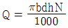
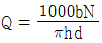
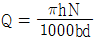
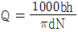
(정답률: 67%)
77. 날개가 회전차의 회전방향에 대하여 반대방향으로 기울어져 있으며, 원심통풍기 중 가장 효율이 좋은 것은?
- 터보 팬
- 다익 팬
- 레이디얼 팬
- 한계부하 팬
(정답률: 75%)
78. 유효 흡입수두(NPSH)를 필요 흡입수두 보다 크게 하며, 펌프의 설치 위치를 되도록 낮게 하고 흡입양정을 작게 하며, 흡입판은 짧게 펌프의 회전수를 낮게 하고 양 흡입형 펌프로 사용하려고 한다. 이는 무엇을 방지하기 위한 대책인가?
- 디더 현상
- 수격 현상
- 캐비테이션 현상
- 히스테리시스 현상
(정답률: 67%)
79. 보통 PIV라고도 하며 한 쌍의 베벨기어에 강제 링크 체인을 연결하여 유효반경을 바꿈으로서 회전수를 조절하는 무단변속기는?
- 벨트형 무단변속기
- 체인형 무단변속기
- 링크형 무단변속기
- 디스크형 무단변속기
(정답률: 68%)
80. 교류 3상 유도전동기의 회전방향을 바꾸려면 어떻게 하는가?
- 접지선을 단락시킨다.
- 전원 3선 중 1선을 단락시킨다.
- 전원 3선 중 1선을 교체하여 결선한다.
- 전원 3선 중 2선을 서로 교체하여 결선한다.
(정답률: 75%)
A부분의 단면적은 40cm2 이므로 A부분에서의 속도는 VA = 2.8L/s ÷ 40cm2 = 0.07cm/s 이다.
연속의 방정식에 의해 A와 B 부분에서의 유속은 같으므로 VA = VB 이다.
B부분의 단면적은 20cm2 이므로 B부분에서의 속도는 VB = 2.8L/s ÷ 20cm2 = 0.14cm/s 이다.
하지만 단위가 cm/s 가 아닌 m/s 로 주어졌으므로, 답은 0.14cm/s × 100 = 14cm/s 가 아닌 0.14m/s × 100 = 14m/s = 140cm/s 이다. 따라서 정답은 "140cm/s" 이다.